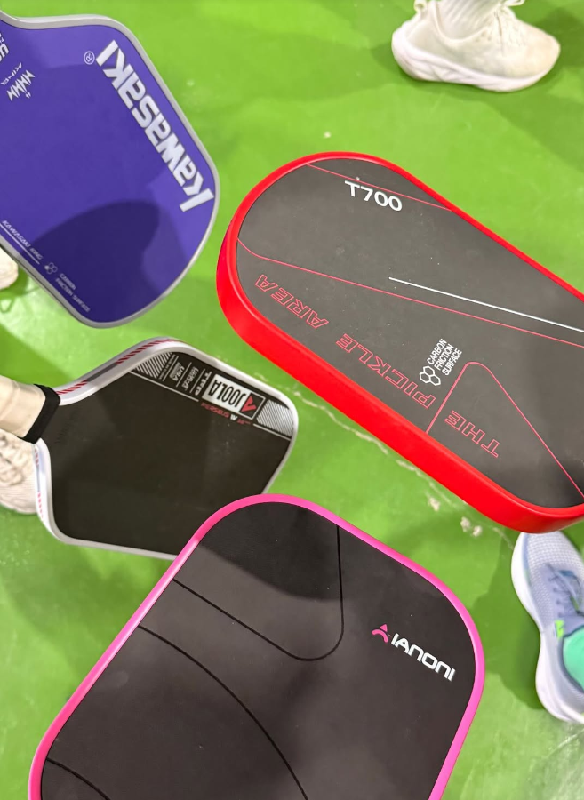
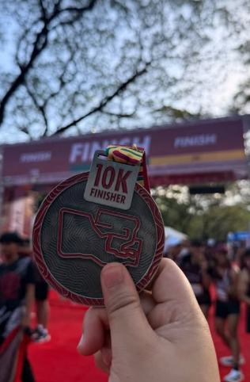
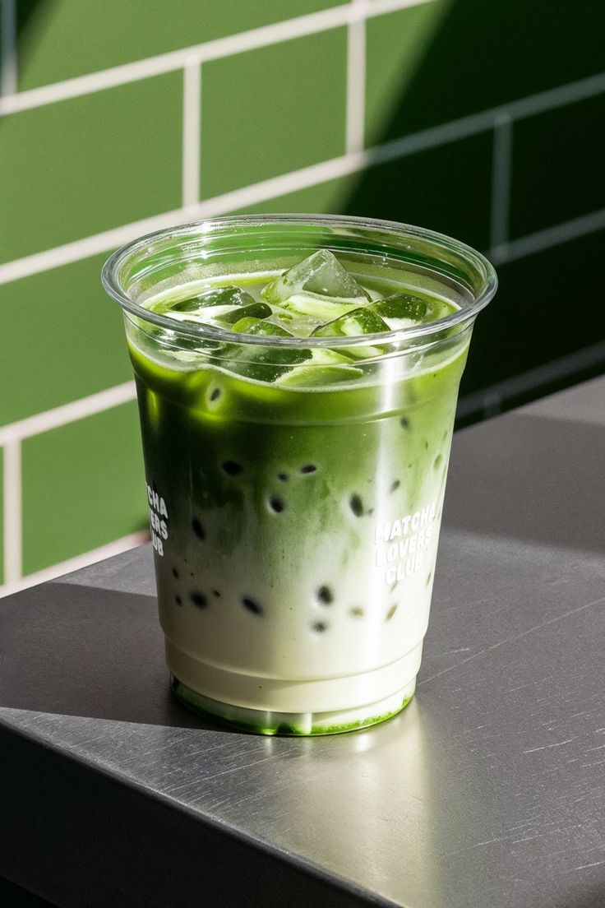
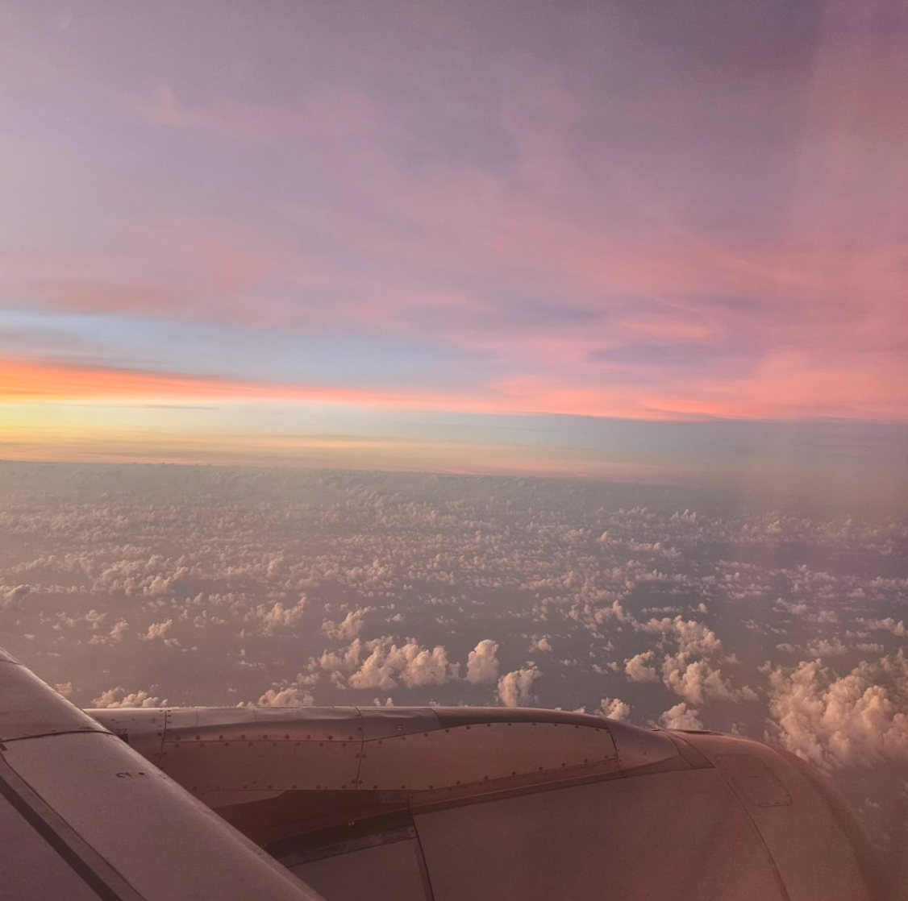
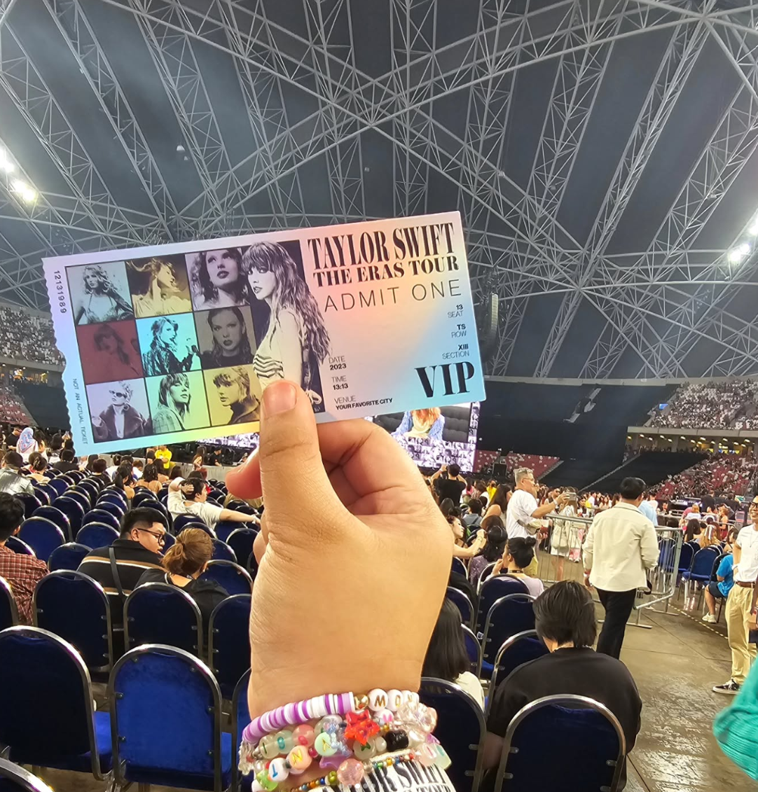
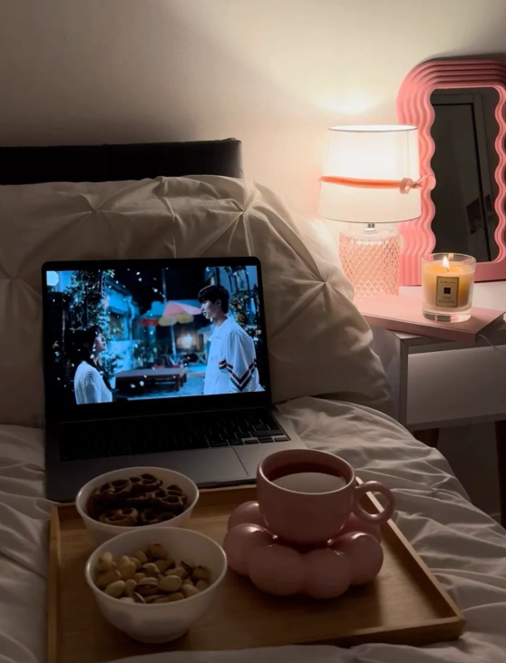

004 / Contact
Let's Connect
Location
Metro Manila, Philippines
University
University of the Philippines
GitHub
github.com/syy-gif
CMSC 207 Mini Project — Personal Web Profile / 2025
MIS student and security analyst safeguarding the web while enjoying runs, pickleball matches, drinking matcha, and travel adventures. 🔐🏃♀️🏓🌍
I'm a second-year Computer Science student with a passion for building elegant, functional software. Whether it's debugging a stubborn algorithm or designing a sleek user interface, I find joy in the creative problem-solving that programming demands every single day.
Originally from Manila, I bring a multicultural perspective to every project I tackle. Outside the classroom I'm constantly experimenting — with code, with cameras, and with coffee recipes. This page is a small window into who I am.
Beyond academics — the things that keep me inspired, curious, and creative outside the terminal.

Playing pickleball keeps me active and competitive in a fun way. I enjoy the fast-paced rallies, friendly matches, and the energy of being on the court. 🏓

Running helps me clear my mind and stay energized. Whether it’s a quick jog or a longer run, it’s my favorite way to recharge and stay motivated. I’ve even joined 2 races in the 10km category! 🏃🏅

I’m a big matcha lover! From matcha lattes to matcha desserts, I enjoy the calm boost and cozy moments it brings to my day. 🍵

I love exploring new places, experiencing different cultures, and creating unforgettable memories wherever I go. Traveling always gives me something new to look forward to. ✈️🌍

Concerts are one of my favorite experiences. The music, the crowd, and the energy make every show unforgettable. 🎤🎶

Watching movies is one of my favorite ways to relax. I love getting lost in great stories, especially films I can rewatch again and again. 🎬🍿
Press the button to reveal a fun fact about me.
Each click draws from a pool of eight personal facts that reset every session. There's also a hidden Easter egg somewhere on this page — curious developers always find it.
0 facts revealed so far